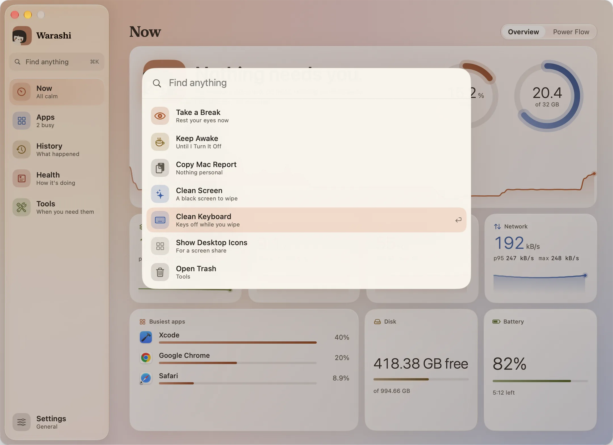
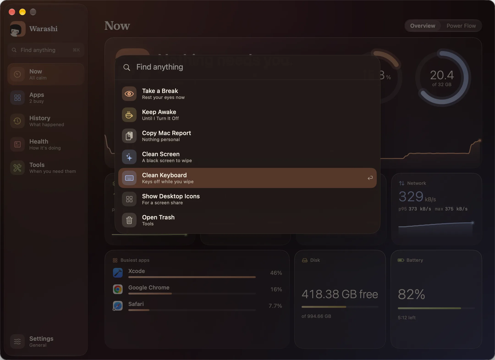

The window is where Warashi shows everything it knows. It's grouped by what you want to do, so anything is at most three clicks away: a place, a tab, an action.
The six places
| Place | The question it answers | Tabs |
|---|---|---|
| Now ⌘1 | How is my Mac right now? | Overview, Power Flow |
| Apps ⌘2 | What is using it? | Apps, Time × Cost, Developer |
| History ⌘3 | What happened? | Charts, Flight Log, Alerts |
| Health ⌘4 | Is it in good shape? | Checkup, Battery, Storage, Advisor |
| Tools ⌘5 | Do something for me | Toolbox (and Speed Test from there) |
| Settings ⌘, | Make it mine | General, Customize, Alerts, Breaks and more |
The tabs sit at the top right of each page. Each place remembers the tab you were last on. Macs without a battery don't show Power Flow or Battery.
Find anything
- Press ⌘K
Or click Find anything at the top of the sidebar, or in the menu bar window.


- Type a few letters
“charge”, “break”, “speed”, “storage”… It finds every page and Settings pane, and actions such as Take a Break, Keep Awake, Charge to Full, Copy Mac Report and Open Trash.
- Press Return
Use ↑ and ↓ to choose, Return to go, and Esc to close.
Now
Now opens first. At the top, how your Mac is in words: Nothing needs you. or what does, with CPU and memory rings over the last 24 hours. Below: GPU, power, temperature and network with their p95 and maximum and the last minute, then the busiest apps, your disk and your battery. Press a tile to go deeper: Power opens Power Flow, Disk opens Storage and Battery opens Battery.